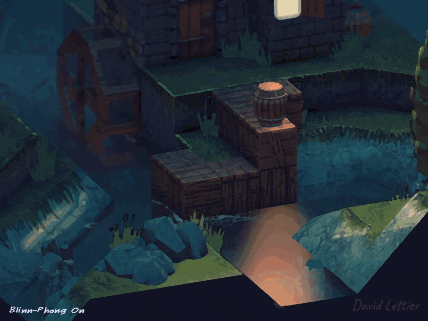
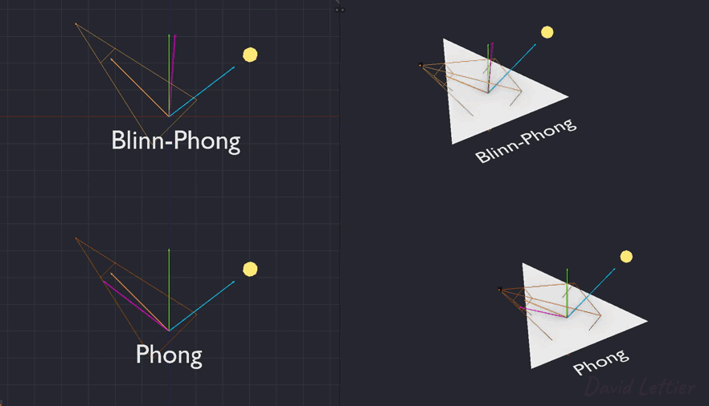
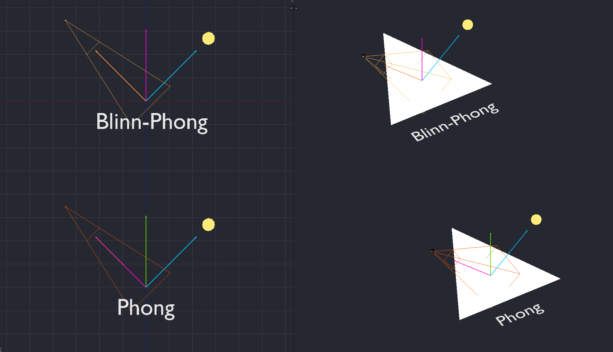
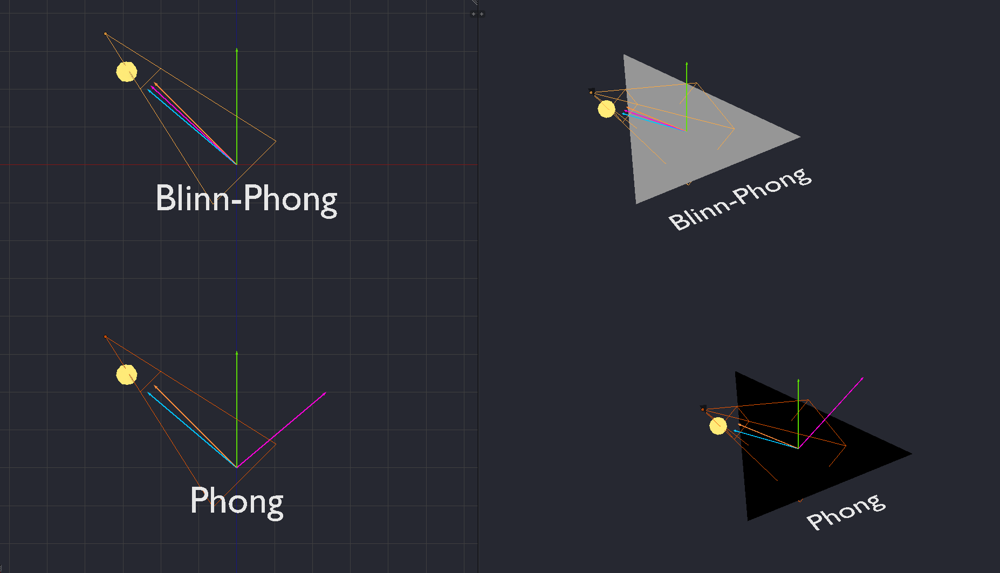

Blinn-Phong 模型是你在 光照 一节中看到的 Phong 模型的一个小调整。 它提供了更可信或更真实的镜面反射效果。 你会注意到 Blinn-Phong 产生的是椭圆形或拉伸的镜面反射， 而 Phong 模型产生的是球形的镜面反射。 在某些情况下，Blinn-Phong 的计算效率也可能高于 Phong。
// ...
vec3 light = normal(lightPosition.xyz - vertexPosition.xyz);
vec3 eye = normalize(-vertexPosition.xyz);
vec3 halfway = normalize(light + eye);
// ...与其计算反射向量， 不如计算 halfway（半角）向量。 该向量位于视图/摄像机/观察方向向量和光照方向向量之间。

// ...
float specularIntensity = dot(normal, halfway);
// ...镜面强度现在是法线与半角向量的点积。 而在 Phong 模型中，它是反射向量与视图向量的点积。

当视图向量（橙色箭头）与反射向量（品红色箭头）方向一致时， 半角向量（品红色箭头）将与法线（绿色箭头）方向一致。 在这种情况下，Blinn-Phong 和 Phong 的镜面强度都会是 1。

在其他情况下，Blinn-Phong 的镜面强度会大于零， 而 Phong 的镜面强度则为零。
(C) 2020 David Lettier
lettier.com